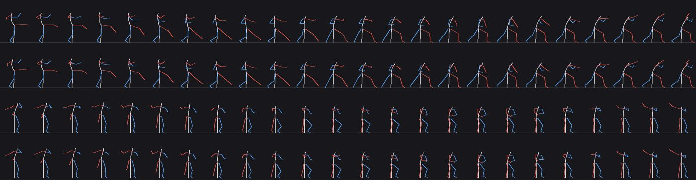
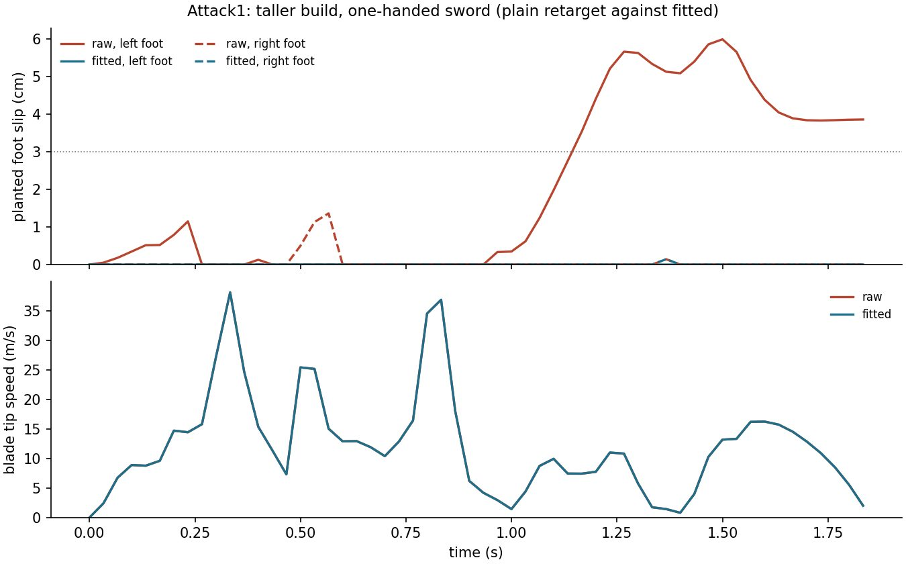

feature · 19 Nov
Moves on other bodies
- ~library moves on our bodies: retargeted, fitted to a build, played and sparred in Unreal
- ~parts in build order. each lists its open faults
Library clips, our skeleton

- +806 bought sword clips retargeted onto our Guard's skeleton in Unreal 5.8
- ~977 seller assets loaded, 0 failures. 4 clips spot-checked by pelvis curve and hand travel
- -joint figures only. mesh, sword grip and game travel not checked yet
Fitted to a build

clips passing every motion check
worst planted-foot slip, one clip, cm
- +move fitter: takes a sword move, a body and a grip, returns the fitted move
- ~806 sword clips, every motion check: 389 pass untouched, 742 fitted
- ~a taller build, one clip: worst planted-foot slip 5.98 cm plain, 0.14 cm fitted
- -32 fitted clips fail the one-frame jump check
Played in Unreal
- +ten fitted Guard moves imported into Unreal and read back. three filmed
- ~two Guards on one clock: a fitted clip beside the original pack clip
- ~worst grip error of the ten: 7.81 cm original, 0.0 fitted
- ~worst planted-foot slip: 5.99 cm original, 1.89 fitted
- -the film does not label which Guard is fitted. feet not checked against the plants
Turn, run, stop
- +a library guard turns, runs and stops on motion matching, in Unreal
- ~stance foot 12.0 cm/s at the median over the whole capture, game time
- -252.4 cm/s at the high end, likely where the feet switch
Strike on the guard
- +two guards spar: strike, block, counter, block. each blade stops on the other's guard
- ~the blades meet 0.12 and 0.10 cm apart, against a 5 cm limit
- -the defender's hands give 25.9 cm on the block, more than the few cm planned
Legs by rule

worst foot slip, mm a frame
- +a different body: legs step by themselves, given only the path and the ground
- ~worst foot slip 0.021 mm a frame. the hand-made walk: 0.145
- -Blender on a test course, not the engine. the body stays level on the stairs